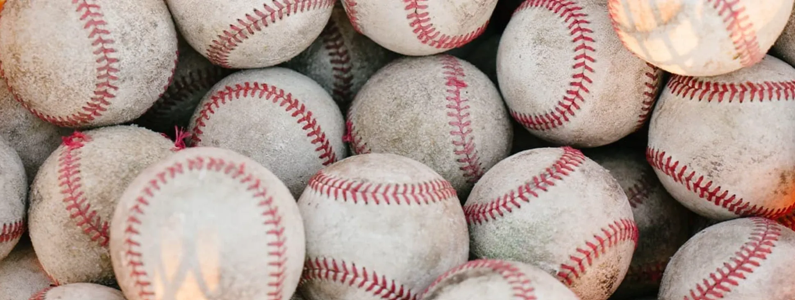
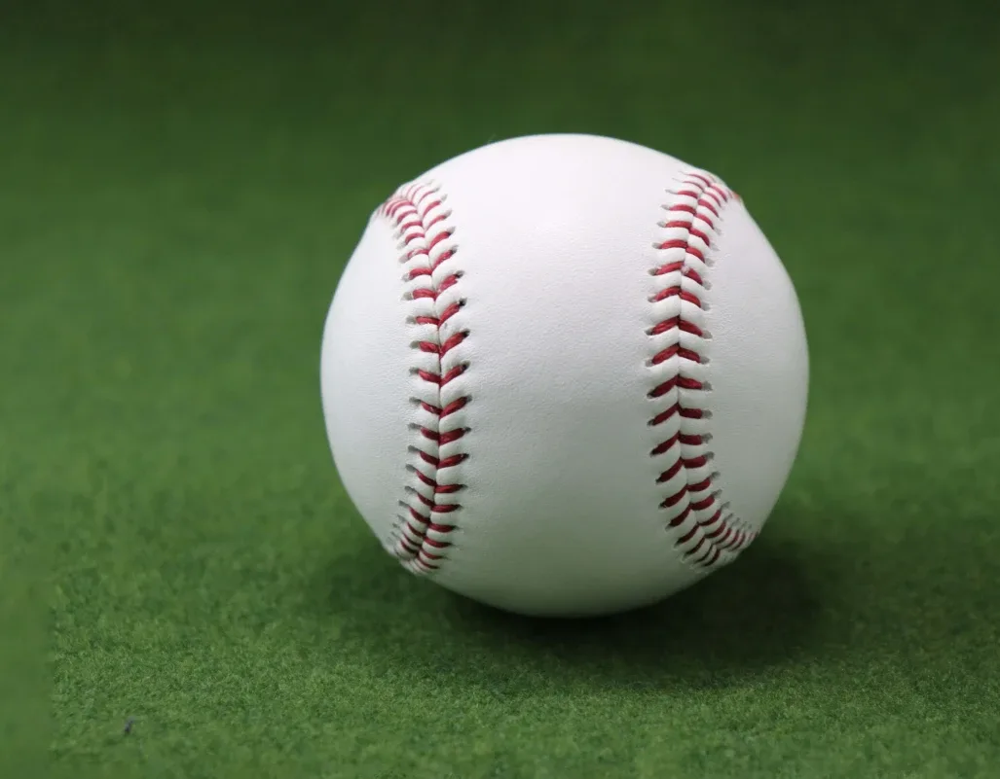

BALL RECYCLE
古いボールを、
もう一度グラウンドへ。
練習で使い古した硬式球を集めて直し、また使えるボールにしています。
BEFORE / AFTER
使い古したボールも、
直せばまた使えます。


硬式球は、練習で使ううちに汚れたり、縫い糸が切れたりします。そうなると練習でも使いにくくなり、倉庫にしまったままになるか、捨てられることが多くなります。
ただ、中の芯までだめになっていることはあまりありません。外の革を張り替えて縫い直せば、また練習で使えます。
FLOW
ボールが戻ってくるまで
手作業なので、一度にたくさんは仕上がりません。そのぶん、一球ずつ確かめてから届けます。
- 01集める使わなくなった硬式球を、チームや学校から引き取ります。
- 02仕分ける芯の状態を一球ずつ見て、直せるものを選びます。
- 03革を張り替える古い革と糸をはずし、新しい革をかぶせます。
- 04縫う赤い糸で、108の縫い目を一針ずつ縫います。
- 05確かめる形と縫い目を見て、問題のないものだけを出します。
- 06届ける練習球として、地域のチームや野球教室へ届けます。
一針ずつ、同じ力で糸を引いて仕上げます。
MAKERS
縫っているのは、
就労継続支援B型の皆さんです。
就労継続支援B型（しゅうろうけいぞくしえん・ビーがた）は、障がいや病気のある方が、体調に合わせて自分のペースで働ける場所です。
ボールの縫い直しは、一針ずつ同じ力で糸を引く、根気のいる作業です。急がず、ていねいに向き合える方の手で、一球ずつ仕上げてもらっています。
作業した分は工賃（はたらいた分のお金）になります。ボールが一球戻るたびに、地域に仕事がひとつ生まれます。
CYCLE
使って、直して、
また使う。
- 使うチームや学校の練習で、ボールは毎日使われます。
- 集める汚れたり糸が切れたりしたボールを引き取ります。
- 直す就労継続支援B型の皆さんが、革を張り替えて縫い直します。
- また使う地域の少年野球チームや野球教室で使ってもらいます。古くなったら、また01へ。
WHY
ものを大切にすることも、
野球から覚えてほしい。
硬式球は、コルクとゴムの芯に毛糸を何重にも巻き、牛の革で包んで縫い上げたものです。小さな一球に、たくさんの材料と手間がかかっています。
まだ使えるのに捨ててしまうのは、もったいない。グラブを手入れして長く使うように、ボールも直して使い続けたいと考えています。
直したボールを子どもたちに使ってもらうことで、道具や資源を大切にする気持ちも一緒に渡していけたら。HAKI proがこの取り組みを始めたのは、そんな思いからです。
SERVICE
サービス内容
- 硬式球の回収チーム・学校・スクールで使わなくなった硬式球を回収します。回収の方法は、数量と場所に合わせてご提案します。
- 再生球の販売張り替え・縫い直しを済ませた硬式球を、練習球として販売しています。数量に応じてお見積りします。
- 回収拠点パートナー店舗や企業さまに、ボールの回収拠点としてご参加いただけます。環境や地域への取り組みとして発信いただけます。
※直した硬式球は練習用です。公式戦ではお使いいただけません。回収・お見積りのご依頼は、お問い合わせからお受けしています。